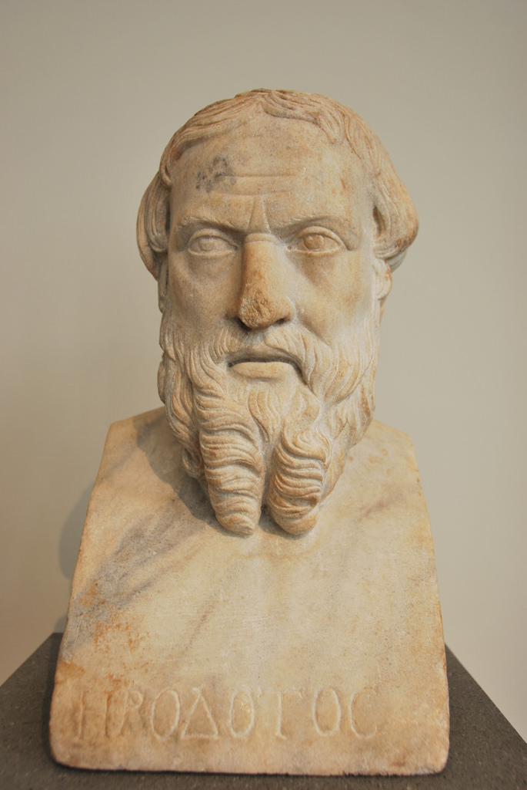

understanding history.History (from Greek ἱστορία, historia, meaning "inquiry, knowledge acquired by investigation") is the study of the past as it is described in written documents. Events occurring before written record are considered prehistory. However, i think that to understand history you need to take a look the following factors of Ecomimic, religous, polical and Psychological motives.
Go to Page 2. 